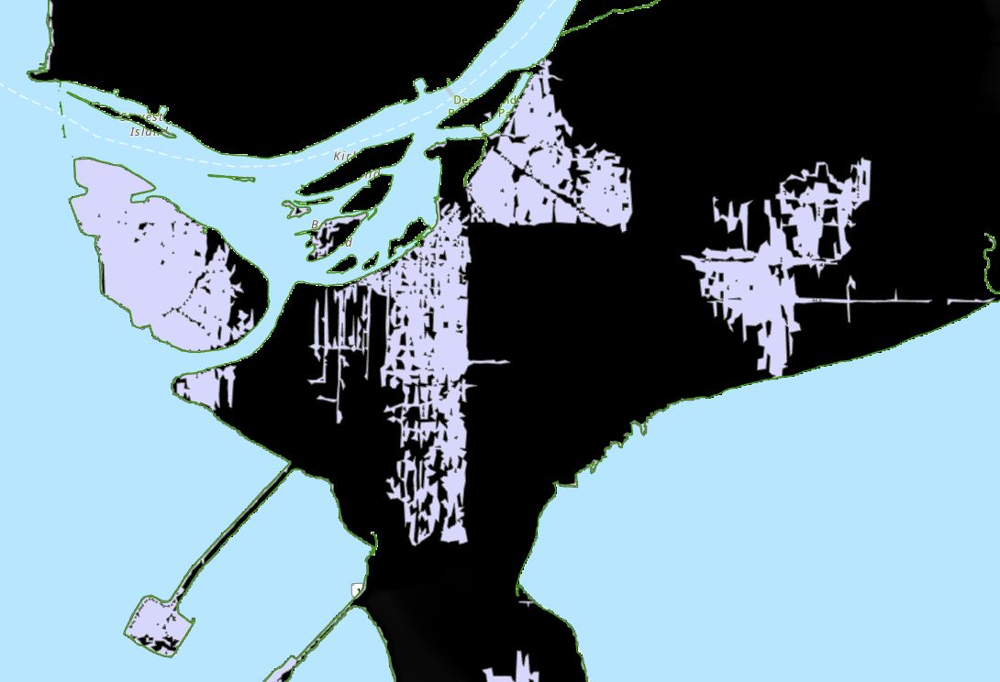

Lab 1 Mapping Sea Level Rise with Digitial Elevation Models
Written by Paul Pickell
1.1 Lab Overview
Climate change is rapidly altering the stability of the Earth’s cryosphere. Over the next century thawing glaciers and ice sheets are expected to result in sea level rise between X-Ym. This is a concern for many coastal environments and communities.
In this lab you will use a digital elevation model (DEM) covering the metro Vancouver region to map areas at risk of flooding during an extreme weather event under current and future conditions, assuming 1.2m of sea level rise by the year 2100. In particular, we will focus on mapping the intersection of high risk areas with critical agricultural land in the Fraser Delta region.
In partnership with the Delta community, the CALP research group at UBC produced the following report on projected sea level rise and adaptation strategies for this region, which can be found here: https://www.fraserbasin.bc.ca/_Library/CCAQ_BCRAC/bcrac_delta_visioning-policy_4d.pdf.

1.1.1 Learning Objectives
Learn how to manage spatial data in a geodatabase?
Understand how to use basic spatial analysis tools (Clip, Intersect, Buffer)
Experiment with visualization of spatial layers
Work with a Digitial Elevation Model
1.2 Task 1: Mapping current flood risk
Peak water levels during a storm with a return period of 200 years is expected to reach 2.96m above sea level (CALP, 2012). We will start by modeling flooding for this scenario. Note that existing flood walls and dykes are built to withstand sea level rise of up to 3.5m and would mitigate flooding in an actual storm surge. For now, we will map flood risk assuming this infrastructure is not in place and there are no obstructions blocking the flow of water over the land.
Q1. Explain what a return period is in terms of natural disasters.
Step 1: First we will identify cells in the DEM that are below the projected high water line of 2.96m. Open the FraserValleyDEM.tif in ArcGIS Pro. Navigate to Analysis > Tools > Reclassify (Spatial Analyst tools).

Click the Classify button and in the pop-up window set the number of classes to 2 and the method to Manual Interval. Set the Upper value to 2.96 and hit OK. In the Output raster field give the new raster a descriptive name (ie DEM_reclass_2m) and save it to the default GDB.
HINT:Giving concise and descriptive names to your spatial data will make things easier to keep track of later on! Note that names should not include periods or spaces

Cells in the resulting raster with a value <2.96 will be assigned a new value of 1 and cells >2.96 will be assigned a value of 2.
Q2. What is the spatial resolution of the DEM?
Step 2: Next, we will convert the reclassified raster into polygon features. Navigate to the Raster to Polygon Tool (Conversion Tools). Set the input raster to the reclassified raster (DEM_reclass_2m) from the previous step and give the output polygon features a descriptive name (flooded_2m_polys) and save to the default GDB. Make sure the Simplify Polygons box is checked.
Q3: What would happen if we did not simply the polygon features? Why might we want to produce simplified polygon features?
Step 3: Open the attribute table for the polygon features. The Gridcode variable corresponds to the cell values from the input raster. In this case we are only interested in polygons representing low elevation cells. We will delete high elevation polygons by selecting features with gridcode = 2
Click Select by Attributes and use the drop-down menus to generate the following expression:

Click the Delete Selection button to delete the selected polygons.

Step 4: Examine the resulting polygon shapefile. You will notice that there are lots of small isolated polygons, not adjacent to the coastline. We will remove these by intersecting the flooded areas features with a polyline representing the coastline.
Open Coastline.shp. Navigate to Map > Select by Location. Set the Input Features to the flooded areas layer and the Selecting Features to the coastline layer. Set the Relationship to Within a distance. Set the distance to 30m. Make sure the Invert spatial relationship box is checked. This will select polygons that are further than 30m from the coast. Click Apply.
Delete the selected features.
Q4: Describe how you would change the selection parameters if you wanted to select flooded areas that are within 100m from the coastline?
You should now have polygon features that look like the following:
 Step 5: Zoom into the polygons. You will notice that even though we used simplified polygons, the edges are still quite jagged. Next, we will smooth these polygons for better visualization.
First, we will reduce the jagged edges in the polygons. Navigate to the Buffer tool. Create a 30m buffer around the flood_2m_polys layer. Set the Dissolve type to Disolve all output features to a single feature. Name the output flood_2m_30mBuffer Click Run.
Q5: Describe what happens if the buffer is NOT dissolved. Which would be better (dissolved or not dissolved) if you wanted to calculate the total flooded area in km2 and why?
Next, we will clip the flooded polygons to align with the extent of the coastline.
Load FraserValley.shp. Navigate to the Clip tool and set the Input features to the flood_2m_30mBuffer layer and the Clip features to the FraserValley.shp. Save the output as flood_2m_30mBuffer_Clip. Click Run.
Step 6: Repeat Steps 1-5, but with a high water line of 4.16m to simulate a storm surge with 1.2m of sea level rise. Be sure to also include a screenshot at the end of step 5.
1.3 Task 2: Intersect flooded areas with agricultural land in the Delta
Step 1:Load the flooded_2m_30mBuffer_Clip layer in ArcPro. Load the agricultural land shapefile, TSLRPLS_polygon.shp.

Step 2: Open the Intersect tool. Fill in the flooded areas and agricultural polygons as the Input Features. Leave the Attributes to Join field as All attributes except feature IDs. Give the new layer a name. This will create a new shapefile of just the overlapping areas from both layers. Click Run.
Open the attribute table of the intersect output and the layers you used as inputs. Notice how the attributes of the original input layers are retained in the new intersected features.
Q6: What layer did the STATUS column originally come from?

Step 3: We will create a new column representing the area of the intersecting polygon features. Open the layer attribute table and click the Add button beside Field:.

In the Fields table name the new field Int_Area, set the data type to Double and then click Save (at the top of map window).

You will now have a blank field in the attribute table.
In the attribute table, right click on the Int_Area field > Calculate Geometry. In the Proporty drop-down select Area and select Square kilometers as the Area Unit. Click OK.
Step 4: Repeat Steps 1-3 for the 4m sea level rise scenario.
Q7: What is the total area of agricultural land is impacted by flooding in the 2m storm surge scenario? In the 4m scenario? Report the final answers in km2.
Q8: For the feature with LRPLD = 5118996, how much more area is flooded in the 4m storm surge scenario compared to the 2m scenario? Report your answer in km2.
Q9: In the 4m storm surge scenario what is the LRPLD of the polygon feature with the highest PROPORTION of flooded area? (Hint: Proportion = flooded area in feature / total area of feature)
1.4 Task 3: Create maps of flood zones
Step 1: Using the spatial layers given to you and the layers that you have created, recreate as closely as possible the following figure using data from the 2m storm surge scenario. Include the screenshot in your final report. Provide a figure title and a brief caption that describes what is being shown in the map.
Hint: To create the figure, experiment with changing the basemap, layer drawing order, colors and transparency.

Step 2: Create the same figure as step 1 now using data from the 4m storm surge scenario. Include the screenshot in your final report. Provide a figure title and a brief caption that describes what is being shown in the map.
Q10: Address the following points in 500 words or less. Current flood infrastructure is designed to withstand sea level rise 3.5m above baseline levels. Based on the analysis here how should these standards change in the future? Reference specific results from this analysis to support your conclusion. What are some of the limitations in how we modeled flood inundation? What other factors could be considered to model flood risk?